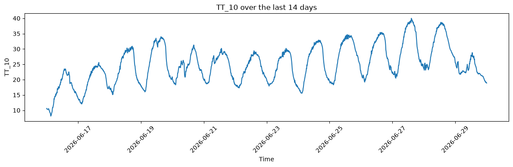

Plotting weather data#
import pandas as pd
import numpy as np
import stackview
rain_dataset = "rain_recent"
temp_dataset = "temp_recent"
df = pd.read_parquet(temp_dataset + ".parquet")
df.head()
| STATIONS_ID | MESS_DATUM | QN | PP_10 | TT_10 | TM5_10 | RF_10 | TD_10 | eor | Stations_id | von_datum | bis_datum | Stationshoehe | geoBreite | geoLaenge | Stationsname | Bundesland | Abgabe | datetime | |
|---|---|---|---|---|---|---|---|---|---|---|---|---|---|---|---|---|---|---|---|
| 0 | 44 | 202412310000 | 3 | -999.0 | 6.4 | 6.0 | 87.3 | 4.4 | eor | 00044 | 20070208 | 20260704 | 44 | 52.9336 | 8.237 | Großenkneten | Niedersachsen | Frei | 2024-12-31 00:00:00 |
| 1 | 44 | 202412310010 | 3 | -999.0 | 6.4 | 6.1 | 86.9 | 4.4 | eor | 00044 | 20070208 | 20260704 | 44 | 52.9336 | 8.237 | Großenkneten | Niedersachsen | Frei | 2024-12-31 00:10:00 |
| 2 | 44 | 202412310020 | 3 | -999.0 | 6.4 | 5.9 | 87.5 | 4.5 | eor | 00044 | 20070208 | 20260704 | 44 | 52.9336 | 8.237 | Großenkneten | Niedersachsen | Frei | 2024-12-31 00:20:00 |
| 3 | 44 | 202412310030 | 3 | -999.0 | 6.4 | 6.0 | 87.1 | 4.4 | eor | 00044 | 20070208 | 20260704 | 44 | 52.9336 | 8.237 | Großenkneten | Niedersachsen | Frei | 2024-12-31 00:30:00 |
| 4 | 44 | 202412310040 | 3 | -999.0 | 6.4 | 5.9 | 87.9 | 4.5 | eor | 00044 | 20070208 | 20260704 | 44 | 52.9336 | 8.237 | Großenkneten | Niedersachsen | Frei | 2024-12-31 00:40:00 |
station = df[df["STATIONS_ID"] == 2928]
station.head
| STATIONS_ID | MESS_DATUM | QN | PP_10 | TT_10 | TM5_10 | RF_10 | TD_10 | eor | Stations_id | von_datum | bis_datum | Stationshoehe | geoBreite | geoLaenge | Stationsname | Bundesland | Abgabe | datetime | |
|---|---|---|---|---|---|---|---|---|---|---|---|---|---|---|---|---|---|---|---|
| 14433235 | 2928 | 202412310000 | 3 | 1010.3 | -0.2 | -1.5 | 83.8 | -2.6 | eor | 02928 | 19970205 | 20260704 | 138 | 51.3151 | 12.4462 | Leipzig-Holzhausen | Sachsen | Frei | 2024-12-31 00:00:00 |
| 14433236 | 2928 | 202412310010 | 3 | 1010.3 | -0.1 | -1.3 | 83.6 | -2.5 | eor | 02928 | 19970205 | 20260704 | 138 | 51.3151 | 12.4462 | Leipzig-Holzhausen | Sachsen | Frei | 2024-12-31 00:10:00 |
| 14433237 | 2928 | 202412310020 | 3 | 1010.2 | -0.3 | -1.6 | 84.2 | -2.6 | eor | 02928 | 19970205 | 20260704 | 138 | 51.3151 | 12.4462 | Leipzig-Holzhausen | Sachsen | Frei | 2024-12-31 00:20:00 |
| 14433238 | 2928 | 202412310030 | 3 | 1010.4 | -0.2 | -1.4 | 83.8 | -2.6 | eor | 02928 | 19970205 | 20260704 | 138 | 51.3151 | 12.4462 | Leipzig-Holzhausen | Sachsen | Frei | 2024-12-31 00:30:00 |
| 14433239 | 2928 | 202412310040 | 3 | 1010.2 | -0.2 | -1.5 | 83.5 | -2.7 | eor | 02928 | 19970205 | 20260704 | 138 | 51.3151 | 12.4462 | Leipzig-Holzhausen | Sachsen | Frei | 2024-12-31 00:40:00 |
| ... | ... | ... | ... | ... | ... | ... | ... | ... | ... | ... | ... | ... | ... | ... | ... | ... | ... | ... | ... |
| 14512430 | 2928 | 202607032310 | 2 | 1008.1 | 16.3 | 14.1 | 67.7 | 10.3 | eor | 02928 | 19970205 | 20260704 | 138 | 51.3151 | 12.4462 | Leipzig-Holzhausen | Sachsen | Frei | 2026-07-03 23:10:00 |
| 14512431 | 2928 | 202607032320 | 2 | 1008.1 | 16.2 | 14.1 | 68.3 | 10.4 | eor | 02928 | 19970205 | 20260704 | 138 | 51.3151 | 12.4462 | Leipzig-Holzhausen | Sachsen | Frei | 2026-07-03 23:20:00 |
| 14512432 | 2928 | 202607032330 | 2 | 1008.0 | 16.2 | 14.1 | 67.8 | 10.2 | eor | 02928 | 19970205 | 20260704 | 138 | 51.3151 | 12.4462 | Leipzig-Holzhausen | Sachsen | Frei | 2026-07-03 23:30:00 |
| 14512433 | 2928 | 202607032340 | 2 | 1008.0 | 16.0 | 14.2 | 68.6 | 10.2 | eor | 02928 | 19970205 | 20260704 | 138 | 51.3151 | 12.4462 | Leipzig-Holzhausen | Sachsen | Frei | 2026-07-03 23:40:00 |
| 14512434 | 2928 | 202607032350 | 2 | 1008.0 | 15.8 | 14.1 | 69.6 | 10.3 | eor | 02928 | 19970205 | 20260704 | 138 | 51.3151 | 12.4462 | Leipzig-Holzhausen | Sachsen | Frei | 2026-07-03 23:50:00 |
79200 rows × 19 columns
import pandas as pd
import matplotlib.pyplot as plt
from datetime import datetime, timedelta
# Define date range
today = datetime(2026, 6, 30)
cutoff = today - timedelta(days=14)
# Filter rows
mask = (station['datetime'] >= cutoff) & (station['datetime'] <= today)
filtered = station[mask]
# Plot
plt.figure(figsize=(12, 4))
plt.plot(filtered['datetime'], filtered['TT_10'])
plt.xlabel('Time')
plt.ylabel('TT_10')
plt.title('TT_10 over the last 14 days')
plt.xticks(rotation=45)
plt.tight_layout()
plt.show()
